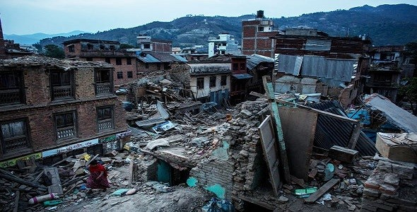

Tsunami - a long, high sea wave caused by an earthquake
Tsunami Preparedness
If You Feel a Strong Coastal Earthquake
DROP, COVER and HOLD ON!
When the shaking stops, gather members of your household and review your evacuation plan. A tsunami may be coming within minutes.
Take your emergency kit. Having supplies will make you more comfortable during the evacuation.
If you evacuate, take your animals with you. If it is not safe for you, it is not safe for them.
Get to higher ground as far inland as possible. Watching a tsunami from the beach or cliffs could put you in grave danger. If you can see the wave, you are too close to escape it.
Avoid downed power lines and stay away from buildings and bridges from which heavy objects might fall during an aftershock.
Staying Safe After a Tsunami
Let friends and family know you’re safe
If evacuated, return only when authorities say it is safe to do so.
Watch animals closely and keep them under your direct control.
Check food supplies. Any food that has come in contact with floodwater may be contaminated and should be thrown out.
Stay out of damaged buildings and those surrounded by water. Tsunami water, like floodwater, can undermine foundations, causing buildings to sink, floors to crack, or walls to collapse.
Watch out for fallen power lines or broken gas lines and report them to the utility company immediately.
Earthquakes - A sudden violent shaking of the ground

Earthquake Preparedness
Staying safe indoors
DROP, COVER and HOLD ON!
If you are in bed, stay there, curl up and hold on, and cover your head.
Stay indoors until the shaking stops and you are sure it is safe to exit.
Be aware that smoke alarms and sprinkler systems frequently go off in buildings during an earthquake, even if there is no fire.
If you smell gas, get out of the house and move as far away as possible.
Before you leave any building check to make sure that there is no debris from the building that could fall on you.
Staying safe Outdoors
Find a clear spot and drop to the ground. Stay there until the shaking stops.
Try to get as far away from buildings, power lines, trees, and streetlights as possible.
If you're in a vehicle, pull over to a clear location and stop. Avoid bridges, overpasses and power lines if possible.
Stay inside with your seatbelt fastened until the shaking stops.
After the shaking has stopped, drive on carefully, avoiding bridges and ramps that may have been damaged.
If a power line falls on your vehicle, do not get out. Wait for assistance.